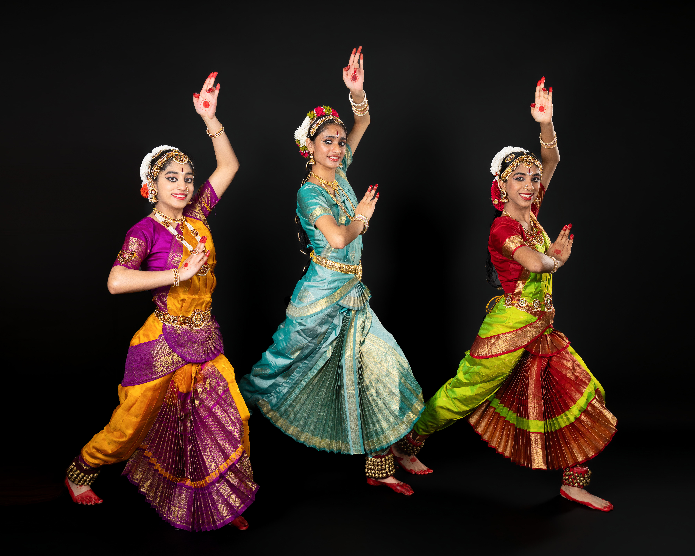
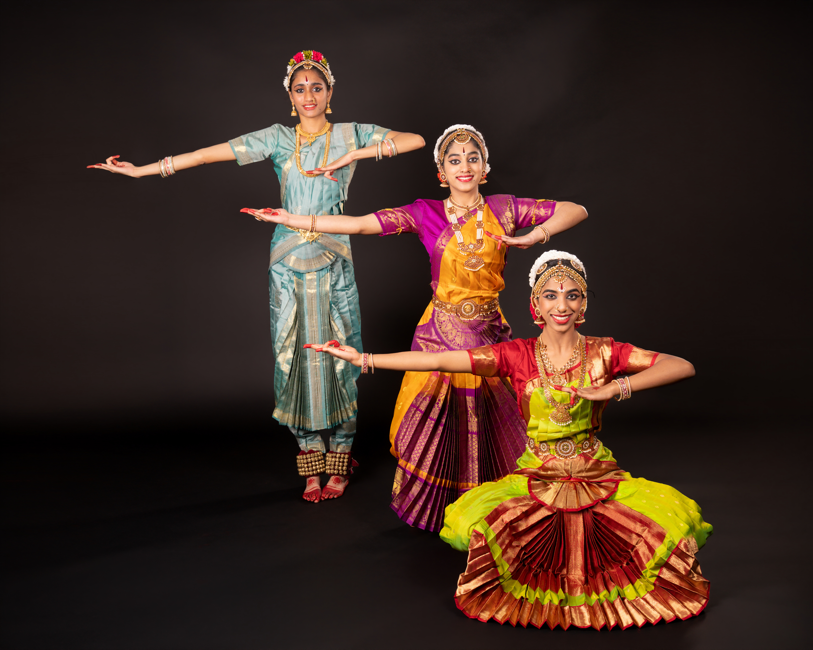
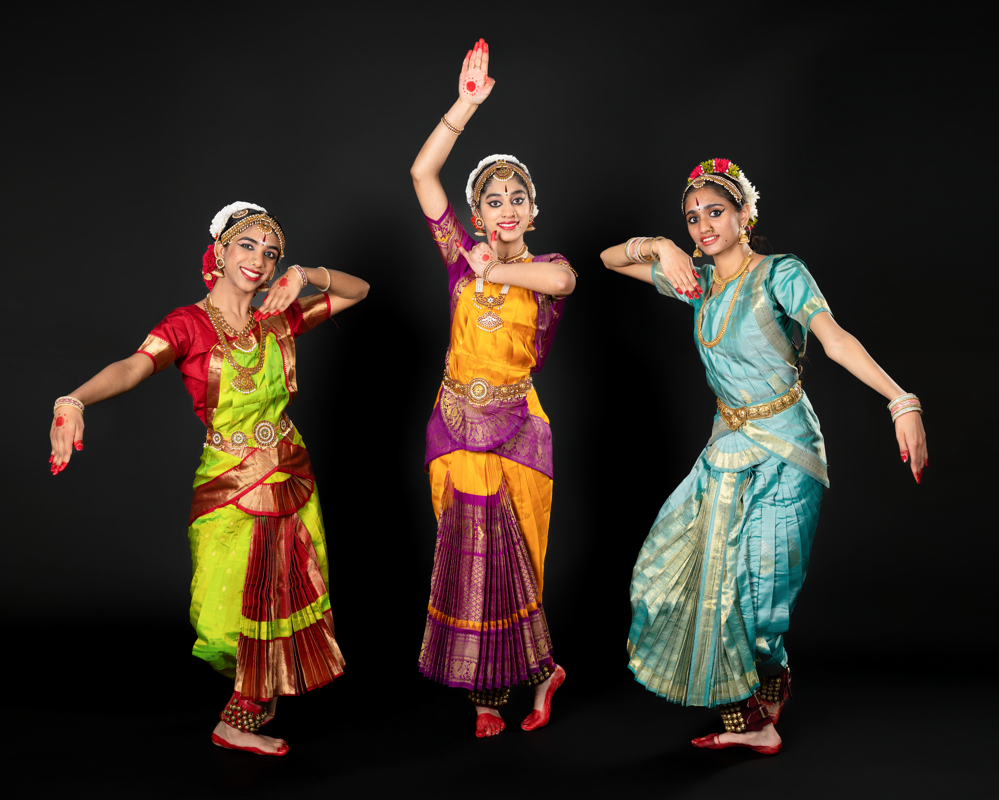
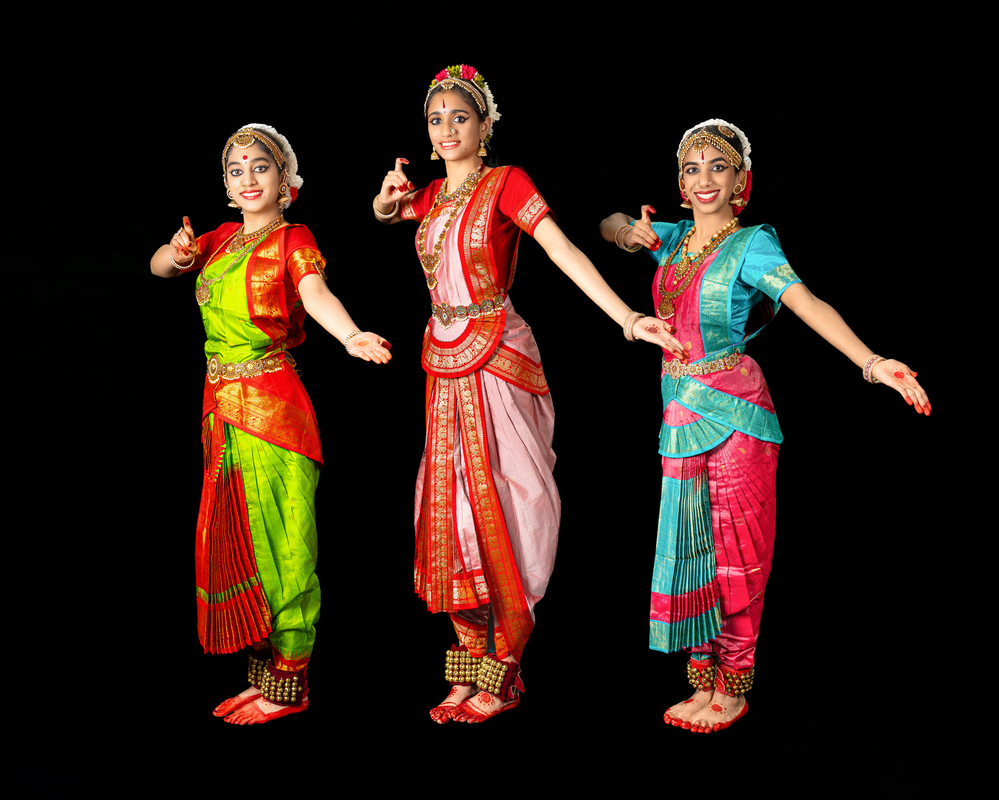
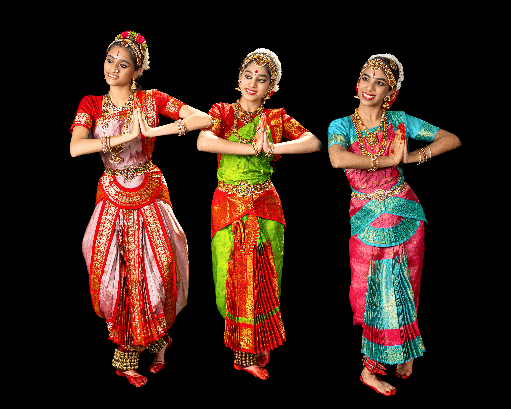

Pushpanjali
Is an invocatory item where the dancer offers salutations in the form of flowers to God, Guru, and the Audience seeking blessings.
A full lineup of items from Pushpanjali to Mangalam, with the orchestra that supports this recital.
Is an invocatory item where the dancer offers salutations in the form of flowers to God, Guru, and the Audience seeking blessings.
This item describes Lord Ganesha, the one with the elephant face, full of compassion and beauty. The dancer bows at his lotus feet, seeking blessings and the removal of obstacles.

The name comes from the Telugu word 'alarimpu', meaning to decorate with flowers. This pure nritta item features harmony between head, hands, and feet through rhythmic grace.

A pure nritta item combining jathi and swara patterns. It emphasizes crisp movement and rhythmic endings called theermanams.

This item introduces Abhinaya, telling the story of Lord Shiva, Goddess Parvathi, Ganesha, and Kartikeya through expressive dance.

The highlight of any Arangetram, this Varnam celebrates Lord Krishna with intricate jathis and abhinaya, including scenes from his childhood and divine form.

The dancer celebrates Goddess Saraswati, the goddess of knowledge, music, and art, dancing to the tune of the Seven swaras and the Omkara Nadam.

The dancer requests Goddess Lakshmi to bring fortune and prosperity, describing her glowing ornaments, silk clothes, and auspicious presence.

This item proclaims the many forms of the goddess Kaali, from Saraswati and Lakshmi to Chamundi, celebrating her as creation, preservation, and destruction.

A song praising Lord Shiva as the protector of the universe, learned in the Vedas, associated with Ganga, and the rescuer of the righteous.

A brisk, rhythmic finale item with nritta patterns and a short lyrical line in praise of Lord Krishna.

An auspicious ending offering salutations to God, Guru, and the audience, asking for blessings and good wishes for everyone present.

Collective Impact: Together, this team has presented Arangetrams, concerts, workshops, and recordings across the world. Their music blends classical depth, soulful Carnatic ragas, and rhythmic energy.
A renowned Carnatic vocalist who has accompanied over 600 Arangetrams worldwide. Trained under Sri Kalarcode Mahadevan and Sri Chandramana Narayanan Namboothiri, he is admired for his melodious voice and musical sensitivity.

An internationally acclaimed flautist trained under his father Sri K. Raghavendra Rao and praised by Pandit Ravi Shankar as a “flute maestro.” He has performed in prestigious venues including Carnegie Hall and Sydney Opera House.

A versatile percussionist skilled in Mridangam, rhythm pads, Morsing, and Kanjira. He blends traditional and contemporary styles, performing in Carnatic sabhas and festivals across India and internationally.